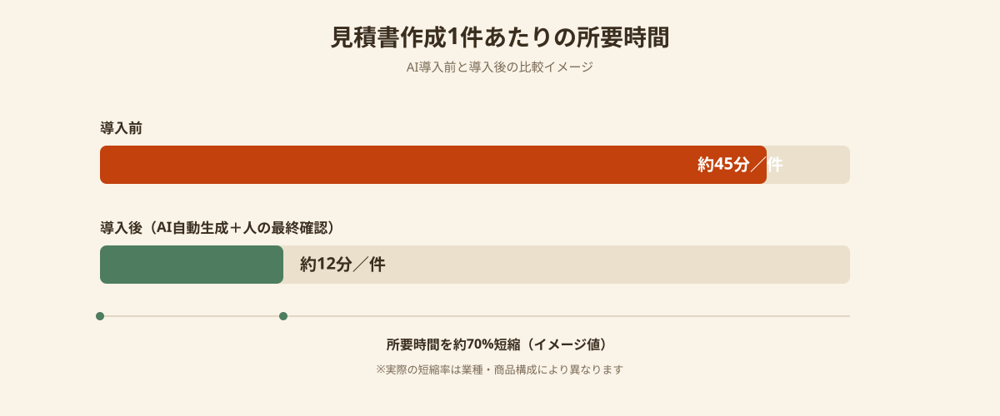
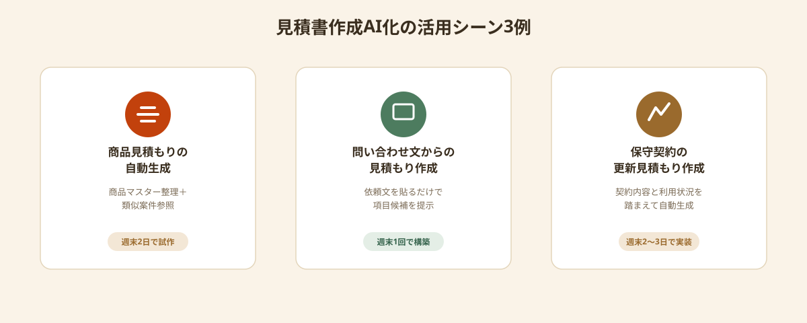

「見積書を作れるのは結局ベテラン社員だけ」「フォーマットがバラバラで、毎回イチから項目を確認している」——見積書作成は、多くの企業で特定の担当者の経験に依存した属人的な業務になっています。
市販の自動見積ソフトは製造業の部品見積もりなど決まった業種・用途に強い一方、自社独自の料金体系や商品構成に合わせたカスタマイズが難しいケースも少なくありません。
この記事では、見積書作成がなぜ属人化・長時間化しやすいのか、AIで自動化する基本的な仕組み、そして自社のフォーマットに合わせて見積書作成をAIで自動化する具体的な4ステップを解説します。
見積書作成が「属人化」して時間がかかる理由
見積書作成にかかる時間は、企業によって大きな差があります。同じような依頼内容でも、担当者の経験によって金額の出し方・項目の書き方が変わってしまうことが、属人化の最大の原因です。
背景には3つの要因があります。まず、過去の見積書や商品マスターがエクセルや紙で分散して管理されているため、似た案件を探すだけでも時間がかかります。次に、商品名・数量・単価をその都度手入力するため、入力ミスや表記のばらつきが発生しやすくなります。そして、見積もり作成のノウハウが個人の頭の中にしかないため、担当者が休むと見積もり対応が止まってしまいます。
- 過去の見積書・商品マスターが分散していて、似た案件を探すのに時間がかかる
- 商品名・数量・単価を毎回手入力し、入力ミスや表記ゆれが発生しやすい
- 見積もり作成のノウハウが個人に依存し、担当者不在時に対応が止まる
これらは「人をもう一人増やす」だけでは解決しません。過去の見積データと商品マスターをAIが参照できる形に整理し、入力をAIが補助する仕組みに変えることで、属人化そのものを解消できます。
AIで見積書作成を自動化する仕組み
AIによる見積書作成の自動化は、過去の見積書や商品マスターのデータを読み込ませ、「顧客名・商品・数量を入力すると、過去の類似案件を参照して金額案と見積書フォーマットを自動生成する」という流れが基本になります。
OCRで紙やPDFの過去見積書を読み込んでテキスト化し、商品名や単価といった項目を抽出してデータベース化したうえで、チャット形式やフォーム形式の入力画面からAIに見積書を生成させる構成が一般的です。メールやチャットで受け取った依頼内容を貼り付けるだけで、必要な項目を自動で拾い出す仕組みも実現できます。
既存の自動見積ソフトとAI活用、何が違うか
製造業向けの自動見積ソフトは、部品の形状や材質から金額を算出するような定型化された計算ロジックに強い一方、自社独自の料金体系・サービス内容に合わせて項目をカスタマイズすることは想定されていない場合があります。一方で、AIを活用した見積書作成は、自社の過去データと商品マスターをそのまま学習元にできるため、業種を問わず「自社の見積もりの作り方」に寄せて実装できるのが特徴です。

大手システム会社にフルオーダーで依頼すると、見積もりロジックの設計から運用フローの構築まで一括提案され、規模が大きくなりやすい傾向があります。対象を「まずはこの商品群の見積もりだけ」と絞り込んでスポット発注すれば、必要な範囲だけを低コスト・短期間で形にできます。
見積書作成をAIで自動化する4ステップ
実際に見積書作成のAI化をスポット発注で進める場合、次の4ステップで検討すると進めやすくなります。
STEP1｜過去の見積書・商品マスターを整理する
最初に行うべきは、過去の見積書をできるだけ多く集めることです。エクセル・PDF・紙どの形式でも構いません。「商品名」「数量」「単価」「特記事項」がどのように書かれているかを確認し、商品マスターとして整理できる項目を洗い出します。
すべての商品を一度に整理する必要はなく、見積もり件数が多い商品群から優先的に着手すると効果を実感しやすくなります。
STEP2｜AIが参照できる形にデータを整える
整理した商品マスターと過去の見積書を、エンジニアがAIで参照できる形（データベースやスプレッドシート連携など）に構築します。紙やPDFの見積書が多い場合は、OCRでテキスト化する工程もここに含まれます。
STEP3｜入力フォームと自動生成の仕組みを試作する
「顧客名・商品・数量を入力すると見積書案が自動生成される」という簡易的な画面を用意し、実際の担当者に使ってもらいます。既存のAI APIやテンプレートを組み合わせる実装が中心になるため、週末2〜3日のスポット稼働で試作まで進められる場合があります。
STEP4｜現場で使いながら精度を調整する
試作版を実際の見積もり依頼に使ってもらい、「金額の出し方がおかしい」「この特記事項も自動で入れたい」といったフィードバックをもとに調整します。全商品への展開を急がず、対象商品群を徐々に広げていくことで、自社に合った形に仕上がっていきます。
スポット発注で実現した見積書AI化の活用シーン

ANKENを通じたスポット発注の事例から、実際にどのような見積書AI化が実現しているかを紹介します。
まず多いのは、商品見積もりの自動生成です。商品マスターを整理し、商品名と数量を入力すると過去の類似案件を参照して見積書案を生成する仕組みを、週末2日のスポット稼働で試作した事例があります。
次に、メールやチャットの問い合わせ文からの見積もり作成です。お客様からの依頼文をそのまま貼り付けると、必要な項目をAIが拾い出し見積もり項目の候補を提示する仕組みを、週末1回のスポット稼働で構築した例があります。
また、保守契約・サブスクリプションの更新見積もり作成も需要が増えています。契約内容と利用状況を踏まえた更新見積もりの自動生成を、週末2〜3日のスポット作業で仕上げた事例もあります。
- 対象とする商品・サービスの範囲が明確で、料金の出し方がある程度定型化できる
- 過去の見積書・商品マスターが（バラバラな形式でも）一定数残っている
- 既存のAI APIやOCRツールを組み合わせて実装できる
- 現場の担当者からすぐにフィードバックを得られる体制がある
共通しているのは、「まず1つの商品群だけをAI化する」というスモールスタートの姿勢です。全商品を一気に自動化しようとせず、効果がわかりやすい範囲から着手することで、スポット発注でも確実に成果を出しやすくなります。
まとめ・ANKENへのご相談
見積書作成の属人化は、「人を増やす」のではなく、過去の見積データと商品マスターをAIが参照できる形に整理し、入力をAIに補助させる仕組みに変えることで解消できます。市販の自動見積ソフトでは対応しきれない、自社独自のフォーマット・料金体系に合わせたカスタム実装も、対象を絞り込めばスポット発注で低コスト・短期間に実現可能です。
重要なのは「最初に対象とする商品群を1つに絞ること」と「過去の見積データを整理しておくこと」です。この2点を押さえたうえでANKENに相談いただければ、見積もり業務の内容に合ったAIエンジニアを提案します。固定費ゼロ・週末スポットから、見積書作成のAI化を進められます。
商品群を1つに絞った相談を歓迎します。固定費ゼロ・週末スポットから依頼可能です。
👉 無料でスポット依頼を相談する初回相談は無料です。要件が固まっていなくてもOKです。